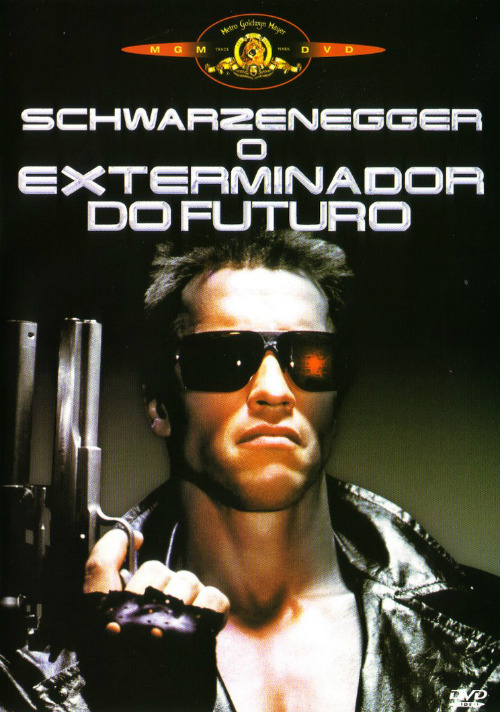
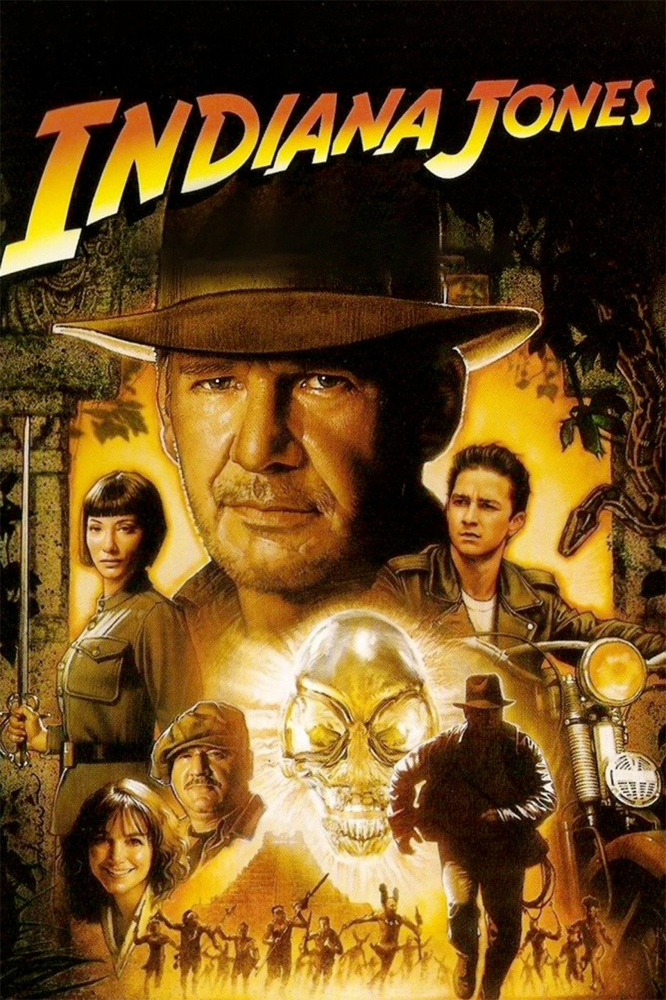
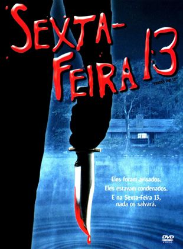
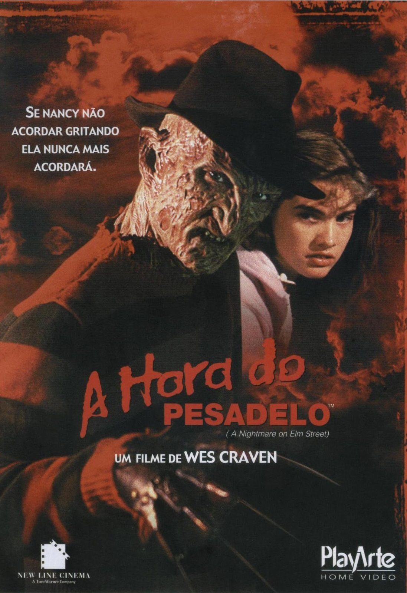

Titanic

Um artista pobre e uma jovem rica se conhecem e se apaixonam na fatídica jornada do Titanic, em 1912. Embora esteja noiva do arrogante herdeiro de uma siderúrgica, a jovem desafia sua família e amigos em busca do verdadeiro amor.
Meu Primeiro Amor
Vada Sultenfuss, uma garota de 11 anos, é obcecada com a morte, pois sua mãe morreu quando a garota nasceu e seu pai, Harry Sultenfuss, é um agente funerário que não lhe dá muita atenção. Vada é apaixonada por Jake Bixler, seu professor de inglês, e é muito amiga de Thomas J. Sennett, um garoto que é alérgico a tudo. Quando Harry contrata Shelly DeVoto, uma maquiadora, para os funerais e se apaixona por ela, Vada se sente rejeitada e quer fazer qualquer coisa para separá-los.
Uma Linda Mulher

Durante uma viagem de negócios a Los Angeles, Edward, um executivo que compra e fragmenta empresas para vendê-las, encontra a prostituta Vivian. Edward a contrata para ficar com ele durante uma semana a fim de acompanhá-lo nos jantares de negócios. Os dois se aproximam e descobrem que há vários obstáculos para serem superados até que possam unir seus mundos tão diferentes.
O Exterminador do Futuro
Disfarçado de humano, o assassino conhecido como o Exterminador (Arnold Schwarzenegger) viaja de 2029 a 1984 para matar Sarah Connor (Linda Hamilton). Enviado para proteger Sarah está Kyle Reese (Michael Biehn), que divulga a chegada do Skynet, um sistema de inteligência artificial que detonará um holocausto nuclear. Sarah é o alvo porque a Skynet sabe que seu futuro filho comandará a luta contra eles. Com o implacável Exterminador os perseguindo, Sarah e Kyle tentam sobreviver.
De Volta Para o Futuro

Marty McFly, um adolescente de uma pequena cidade californiana, é transportado para a década de 1950 quando a experiência do excêntrico cientista Doc Brown dá errado. Viajando no tempo em um carro modificado, Marty conhece versões jovens de seus pais e precisa fazer com que eles se apaixonem, ou então ele deixará de existir. Para complicar, Marty precisa voltar para casa a tempo de salvar o cientista.
Indiana Jones - Reino da Caveira de Cristal
Durante a Guerra Fria, Indiana Jones e o jovem Mutt buscam a Caveira de Cristal, um objeto místico de grande valor, mas logo percebem que não estão sozinhos. Soviéticos liderados pela cruel Irina Spalko também querem o objeto para tentar dominar o mundo através dele.
Sexta-feira 13
A história do homicído em Crystal Lake não impede que os instrutores montem um acampamento de verão no bosque. Moradores supersticiosos advertem sobre o ocorrido, mas os jovens Jack, Alice, Bill, Marcie e Ned, prestam pouca atenção aos mais velhos e acabam sendo perseguidos por um assassino brutal. A medida em que são esquartejados, baleados e esfaqueados, os instrutores lutam para manterem-se vivos contra um adversário implacável.
A Hora do Pesadelo
Um grupo de adolescentes tem pesadelos horríveis, em que são atacados por um homem deformado com garras de aço. Ele apenas aparece durante o sono e, para escapar, é preciso acordar. Os crimes vão ocorrendo seguidamente, até que se descobre que o ser misterioso é na verdade Freddy Krueger, um homem que molestou crianças na rua Elm e que foi queimado vivo pela vizinhança. Agora, Krueger pode ter retornado para se vingar daqueles que o mataram, através do sono.